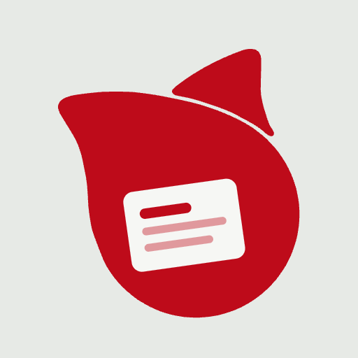

「スニペット帳」は、よく使う文章・コマンド・ID やパスワードを登録しておき、クリック（スマホはタップ）だけでコピーできる道具です。
毎回入力していた文字を、ワンタッチで貼り付けられるようになります。登録した内容は、あなたのパソコンやスマホの中に、暗号で守られて保存されます。インターネット上に送られることはありません。
アプリを初めて開くと、「はじめる」という画面が出ます。
復元キーは「家の合鍵」です。この画面を閉じると二度と表示できません。パスキーも復元キーも無くすと、登録した中身は誰にも（このアプリにも）開けなくなります。紙に印刷するかパスワード管理アプリに保存し、バックアップファイルとは別の場所にしまってください。人に見せないでください。
ロック画面の 🔑 パスキーで開く を押し、指紋・顔など（端末のロック解除と同じ方法）で確かめると、前回の内容がそのまま開きます。打つものはありません。
「復元キーで開く」の欄に、控えた復元キーを打って 復元キーで開く を押します。区切りの - はあってもなくてもかまいません。小文字でも大丈夫です。数字の 0 と英字の O、数字の 1 と英字の I・L は、どちらを打っても同じに読みます。
作業を中断して席を離れるときは、画面右上の 🔒 ロック を押すと、すぐにロックできます。
何もしないまま 5 分たつと、自動でロックします（Version 2.00.004 から）。時間は 12章の「鍵の設定」で 1・5・15・30 分・しない から選べます。別のタブやアプリに移っている間も、何もしない時間に数えます。
ロックすると（手で押しても、自動でも）、画面に出ていた中身・編集欄・検索の文字・人に送るパスワードの画面・打ちかけた復元キーも、すべて消します（Version 2.00.005 から）。書き出し・人に送る・読み込みの途中でロックしたときは、その作業は取りやめます。開き直してから、もう一度やり直してください（Version 2.00.006 から）。パスキーの登録・復元キーの作り直し・鍵をすべて作り直すの途中でロックしたときも同じで、鍵は前のまま変わりません（Version 2.00.007 から）。
古い端末やブラウザでは、パスキーを登録できないことがあります（「対応していません」と出ます）。その端末では、毎回復元キーで開いてください。守りの強さは変わりません。
画面上部の「コピー」ボタンが押された状態が、コピーモードです。ふだんはこの状態で使います。
カードの左端の番号を使い、⌘+1 〜 ⌘+9、10番目は ⌘+0 で、その番号のカードを直接コピーできます。（Windows は Ctrl キー）
画面上部の「編集」ボタンを押すと、編集モードになります。
編集が終わったら「コピー」ボタンを押して、コピーモードに戻します。
ログイン情報のように、ID とパスワードをセットで扱いたいときは、専用のカードを使います。
コピーモードに戻すと、ID とパスワードを別々のボタンでコピーできます。パスワードは伏字（●●●）で表示され、のぞき見を防ぎます。👁 ボタンを押すと、3秒だけ中身を確認できます。
ID/パスワードのカードでは、⌘+番号 でパスワード、⌘+Shift+番号 で ID をコピーします。
用途ごとに帳面を分けられます。たとえば「サーバー用」「メール用」のように。画面上部にタブが並び、クリックで切り替わります。
編集モードにすると、タブの右に ＋（セットを追加）が出ます。表示中のタブをもう一度クリックすると、名前を変えられます。× でそのセットを削除できます。
いま表示しているセットが、キーボードのショートカット（⌘+番号）の対象になります。
登録した内容は、まれに消えてしまうことがあります（特にスマホ）。バックアップを取っておけば、消えても元に戻せます。
画面上部に「バックアップをおすすめします」という案内が出たときも、バックアップの合図です。パスキーを登録したとき・復元キーを作り直したときにも出ます。
暗号化バックアップは中身が守られていますが、復元キーと同じ場所には置かないでください（両方そろうと開けてしまいます）。また、「平文で書き出し」で作ったファイルは中身が見える状態です。クラウドの共有フォルダなどには置かないでください。
アイコンから開けるようにしておくと、アプリのように使え、スマホではデータも消えにくくなります。
| 端末 | やり方 |
|---|---|
| iPhone・iPad（Safari） | 下の共有ボタン ⬆︎ から「ホーム画面に追加」。前に追加していたら、一度消してから追加し直すと新しいアイコンになります。 |
| Mac（Safari） | メニューの「ファイル」→「Dock に追加」。 |
| Mac・Windows（Chrome） | アドレス欄の右の「インストール」マーク。またはメニュー →「キャスト、保存、共有」→「インストール」。 |
| Android（Chrome） | メニュー →「ホーム画面に追加」または「アプリをインストール」。 |
アイコンから開いても、データとパスキーはブラウザで開いたときと同じです。
スマホは保存が消えやすいので、大切な変更をしたら、必ず「バックアップしてロック」でバックアップを取ってください。
共有のパソコンなど、データを残したくない端末では、起動画面の「📄 ファイルを読み込むだけ（保存しない）」を選ぶと、バックアップファイルを開いて見る・コピーするだけができます。開くときはパスキーか復元キーを使います。閉じれば何も残りません。
自動でそろえる仕組みはありませんが、バックアップを使って手で合わせられます。パソコンを「正（おおもと）」にして、他の端末へ配るやり方が安全です。
復元キーは、どの端末でも同じものです（新しく作られることはありません）。
取り込むと、その端末の前のデータは消えて、選んだ内容に置き換わります。どちらが新しいか分からなくならないよう、「編集はいつもこの端末だけ」と決めておくのがおすすめです。
フッターの「このセットを暗号化して送る」を使います。
ファイルとパスワードは、別々の方法で相手に送ってください。たとえばファイルはメール、パスワードは電話や SMS・CP2P で。同じメールに両方入れると、暗号にした意味がなくなります。
受け取った相手は、「読み込み」でファイルを選び、パスワードを入れると、その内容を自分の帳面に取り込めます。
前の版の自動パスワードは短く、ファイルを手に入れた人に時間をかけて当てられるおそれがありました。大事なパスワードや API キーを送ったことがあれば、送り直すだけでは足りません（古いファイルが残っていると、そこから読まれるおそれがあるためです）。
開いた後、画面右上の 🔑 鍵 を押すと、鍵の設定が開きます。
| したいこと | やり方・気をつけること |
|---|---|
| この端末でパスキーを登録する | この端末でパスキーを登録。名前（例：「iPhone の Safari」）を付けておくと、あとで見分けられます。 |
| ほかの端末で登録したパスキーを、この端末の一覧にも出す | パスキーの一覧は端末ごとに持っています。ほかの端末で「バックアップしてロック」したファイルをこの端末に移し、ほかの端末のパスキーを合わせる で選びます（中身のデータは変わりません）。合わせると、この端末でも、ほかの端末のパスキー（スマホの QR コードなど）で開けるようになり、この端末で取るバックアップも、どの端末のパスキーでも開けるようになります。「上書き用バックアップから開く」で取り込んだときも、一覧は自動で合わさります（Version 2.00.009 から）。 Version 2.00.010 からは、改ざんを見分ける印の付いたファイル（Version 2.00.010 以降で書き出したもの）だけで合わせます。前の版で書き出したファイルを選ぶと断るので、相手の端末を新しい版で開いて、書き出し直してください。 |
| パスキーを外す（端末をなくした・手放した） | 一覧の 外す。そのパスキーでは開けなくなります。外したことはバックアップにも記録され、ほかの端末で合わせたときに、そちらでも外れます（古いバックアップから戻ることはありません）。端末のパスワード管理に残る「スニペット帳」のパスキーは、そちらで消してください。 |
| 復元キーを作り直す（なくした） | 復元キーを作り直す。新しい復元キーを控えます。前に書き出したバックアップは、古い復元キーで開けるままなので、新しくバックアップを取り、古いバックアップは捨ててください。 人に見られた・漏れたかもしれないときは、これではなく下の「鍵をすべて作り直す」を使ってください。復元キーの作り直しはデータの鍵を包み直すだけなので、古い復元キーと古いバックアップを持つ人からは守れません。 |
| 自動ロックの時間を変える | 「何もしないとロック」で 1・5・15・30 分・しない から選びます（はじめは 5 分）。この端末だけの設定です。 |
| パスワードをコピーしたあと、クリップボードを空にする | 「パスワードをコピーしたら」で「30 秒後に空にする」（はじめの設定）か「空にしない」を選びます。パスワード・復元キー・人に送るパスワードのコピーが対象です（ふつうの文章のコピーは空にしません）。 ブラウザの決まりで、空にできるのはこの画面が前に出ているときだけです。ほかのアプリに移っている間は、戻って画面を触ったときに空にし、「クリップボードを空にしました」と出ます。戻らなければ、クリップボードに残ったままです。また、クリップボードの履歴（Windows の Win＋V・履歴アプリ）や、Mac と iPhone の共有クリップボードに入った分は消せません。大事なパスワードを貼り付けたら、この画面に戻るのがおすすめです。 |
| バックアップと開いた履歴を見る | 鍵の設定の下のほうに「バックアップの履歴」と「開いた履歴」が出ます（Version 2.00.010 から）。いつ・どの端末・どのブラウザで、バックアップを書き出したか・開いたか（パスキーか復元キーか・閲覧専用か）が、新しい順に並びます。バックアップの行には、そのファイル名の印（10 文字）も出るので、手元のファイルと見くらべられます。履歴はバックアップに暗号化して入り、同じデータのほかの端末のバックアップを取り込むと合わさります。 |
| この端末の名前を付ける | 「この端末の名前」に、例えば「事務所の MacBook」と書きます。ブラウザからはパソコンの名前を読めないので、ここで付けた名前が履歴に出ます（空なら Mac・Windows・iPhone などと出ます）。 |
| バックアップファイルが本物か確かめる | バックアップファイルを確かめる でファイルを選ぶと、取り込まずに「改ざんの印が合うか」「ファイル名の印が合うか」「いつ・どの端末で作ったか」を出します。 |
| 鍵をすべて作り直す（人に見られた・漏れたかもしれない・念のため全部変えたい） | 鍵をすべて作り直す。新しい復元キーを作り、登録したパスキーはすべて外れます。そのあとパスキーを登録し直し、新しくバックアップを取ってください。 |
前の版は、マスターパスワードで開くもので、アドレスは https://cp2p.eiwa-up.jp/snippet-book/ でした。データの保存場所はアドレスごとに別なので、次の手順で移します。
2台目からは、5 で作った新しい形のバックアップを使い、10章の「新しい端末で使い始めるとき」のとおりにします。
全員が移り終わったら、前のアドレスを開くと新しいアドレスへ自動で移るようにします。それまでは、前のアドレスも今までどおり使えます。
| こまったこと | どうするか |
|---|---|
| 「🔑 パスキーで開く」が出ない | この端末にはまだパスキーが登録されていません。復元キーで開いてから、「🔑 鍵」で登録してください。 |
| パスキーで開けない | 取り消した・時間切れのときは、もう一度押してください。端末を変えた・パスキーを消したときは、復元キーで開いてください。 |
| 「復元キーが違います」と出る | 25 文字そろっているか確かめてください。古いバックアップを開くときは、そのバックアップを作ったときの復元キーが必要です（復元キーを作り直した場合）。 |
| パスキーを登録できない（対応していません） | その端末・ブラウザは対応していません。毎回復元キーで開いてください。iPhone は iOS 18 以降、Mac は macOS 15 以降が目安です。 |
| データが消えた・見えない | 別のブラウザや別のアドレスで開いた可能性があります。いつもと同じブラウザ・同じアドレス（https://snippet.eiwa-up.jp/）で開き直してください。バックアップがあれば「上書き用バックアップから開く」で戻せます。 |
| 「この端末に保存できませんでした」と出る | 端末の保存の容量がいっぱいかもしれません。そのときの作業（鍵の作り直し・パスキーの登録など）は取りやめになり、データと鍵は前のままです（Version 2.00.008 から）。いらないカードを消す・ほかのサイトのデータを消すなどしてから、やり直してください。念のため、すぐにバックアップを取ってください。 |
| 「このファイルは改ざんの恐れがあります」と出る | そのファイルの中身・鍵の情報（パスキーの一覧など）・ファイル名の印のどれかが、書き出したときと変わっています（Version 2.00.010 から）。中身や鍵の情報が変わっているときは取り込みません。ファイル名の印だけが合わないときは、続けるか聞きます。心当たりが無ければ「キャンセル」を押し、ほかのバックアップを使ってください。ファイル名を自分で変えた・別のファイルの名前を付けたときにも出ます。 |
| 「データを開けませんでした（鍵とデータが合いません）」と出る | この端末のデータが壊れているかもしれません。アプリはデータに手を付けずに止まります（Version 2.00.008 から。前の版は見本のデータで上書きしていました）。バックアップがあれば「上書き用バックアップから開く」で戻せます。 |
| パスキーも復元キーも無い | 残念ながら中身は復元できません。「パスキーも復元キーも無い」でリセットし、新しく作り直してください。バックアップと、そのときの復元キーがあれば、取り込めます。 |
| バックアップファイルを取り込めない | 「上書き用バックアップから開く」で取り込めるのは、「バックアップしてロック」で作ったファイルだけです。それ以外は、開いた後の「読み込み」を使ってください。 |
| 前の版のマスターパスワードを忘れた | 前の版のデータは開けません。前の版のバックアップがあっても、マスターパスワードが無ければ開けません。 |
このアプリは、あなたの端末の中だけで動きます。登録した内容をインターネットに送るしくみはありません。Version 2.00.003 からは、文字の形（フォント）もアプリと一緒に置き、ほかのサイトからは何も読み込みません。
アプリのファイルが書きかえられていないかは、「ハッシュ値（SHA-256）」で確かめられます。公式サイトに載っている値と一致すれば本物です。
| 版 | SHA-256（snippet-book.html） |
|---|---|
| Version 2.00.010 | 8bbdc49c5a6de672ef73fc0a9b51cb1cd0a5e7822839b5e15e1ec85899dec6fc |
| Version 2.00.009 | 30ea7c9d7c31382a1e1a784053c3867339a9b40a1bf02756beba359e38ae812b |
| Version 2.00.003 | dae7fd31aedfdac2fd78f1da7458122d4157b29d4264ca21579e49d3cd37cd39 |
Mac のターミナルで確かめる方法：
curl -s https://snippet.eiwa-up.jp/ | shasum -a 256
Windows の PowerShell で確かめる方法：
Invoke-WebRequest https://snippet.eiwa-up.jp/ -OutFile snippet-book.html; Get-FileHash snippet-book.html -Algorithm SHA256